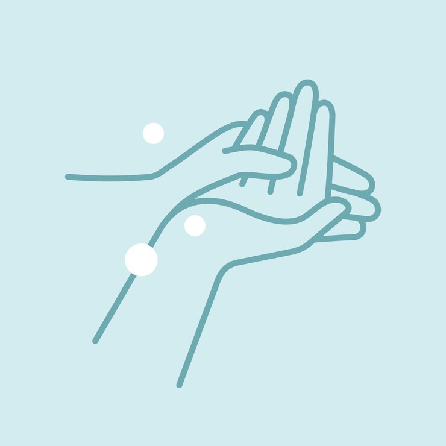
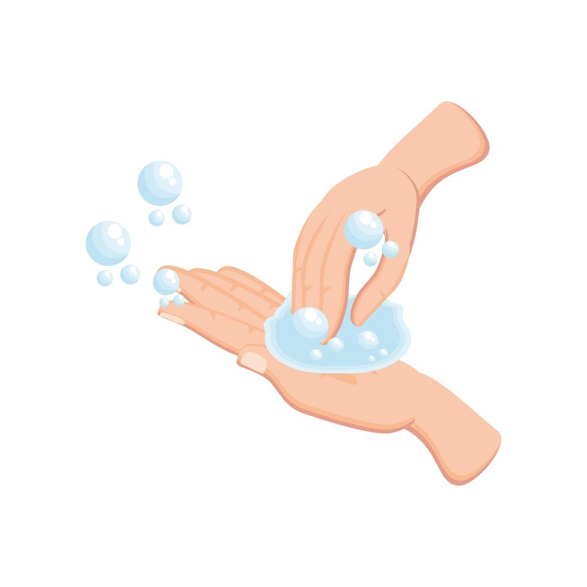

Deposite en la palma de la mano una dosis del producto para cubrir todas las superficies;

Frotese las palmas de las manos entre si;

Frotese la palma de la mano derecha contra el dorso de la izquierda, entralazando los dedos y viceversa;

Frotese las palmas de las manos entre si, con los dedos entrelazados;
Frotese el dorso de los dedos de una mano opuesta, agarrandose los dedos;

Frotese con un movimiento de rotacion del pulgar izquierdo, atrapandolo con la palma de la mano derecha y viceversa;
Frotese la punta de los dedos de la mano derecha contra la palma de la mano izquierda, haciendo un movimiento de rotacion y viceversa;
Una vez secas, sus manos son seguras.